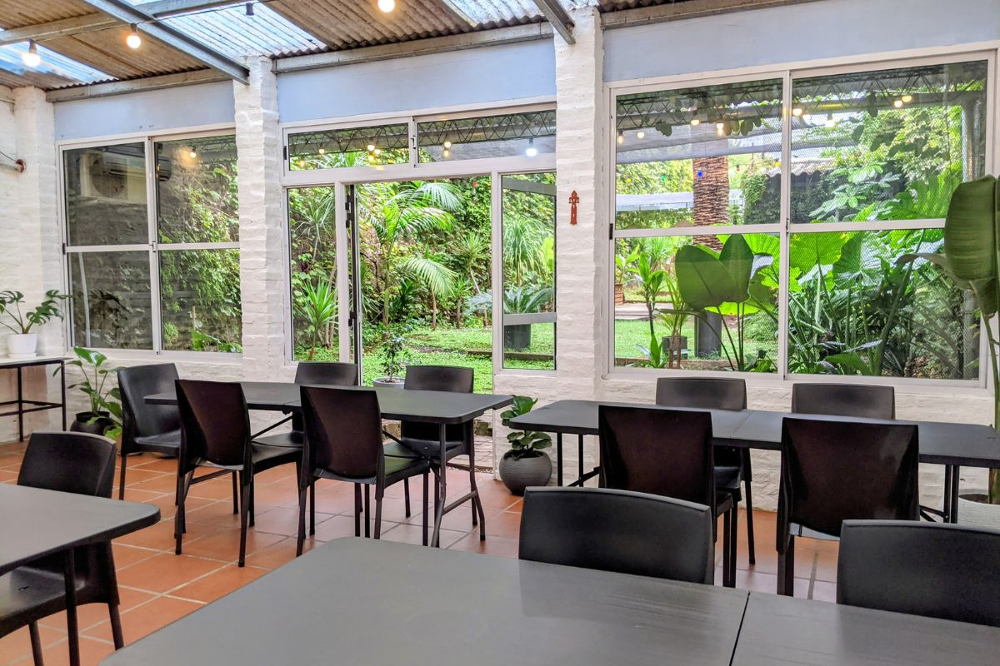

← Volver

Cata de vinos guiada
25 de abril · 20 hs
$18.000
Quedan 6 lugares
Una experiencia guiada para descubrir aromas, sabores y maridajes en un entorno cuidado.
Incluye degustación de etiquetas seleccionadas, introducción a cata y acompañamientos.
Reservar por WhatsApp